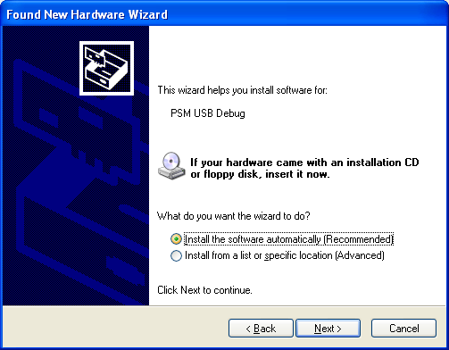

Contents
This document explains the procedure for executing a PSM application on PlayStation(R)Vita.
Execution on PlayStation(R)Vita requires a memory card and an environment with a wireless (WiFi/3G) network connection.
If the OS of the development PC is Windows XP, you may be prompted to reinstall the USB driver upon using the USB cable to connect PlayStation(R)Vita and the development PC.
In this case, follow instructions in the Windows dialog and install the USB driver onto the development PC.
If the OS is Windows 7, there is no need to make this setting.
Installing the USB Driver to a Windows XP
- Connect the development PC with PlayStation(R)Vita using a USB cable.
When connected, the following dialog will be displayed; select "Yes, this time only" and click on the "Next >" button.

- Select "Install the software automatically (Recommended)" and click on the "Next >" button.

- Pressing the button will start the installing process.

- When installing of the USB driver completes, the following dialog is displayed.
Click on the "Finish" button to complete the installing process.

Next, install PlayStation(R)Mobile Development Assistant to PlayStation(R)Vita.
Use the following procedure to install Development Assistant.
With the PlayStation(R)Network (Sony Entertainment Network) account registered in the PS Vita system, register as a developer on DevPortal.
When developer registration is complete, Development Assistant can be downloaded from the PS Store. Start the PS Store application from the PS Vita Home screen.
Tap the button in the lower right and select the Download List from the menu that appears.
Select [Games] from the tab at the top.
Search for [PlayStation(R)Mobile Development Assistant], then tap [Download] on the right to download and install.
When installation is successful, the following icon will appear in the PS Vita Home screen.

In the PS Vita Home screen, tap the [Settings] icon, then select [Date & Time] - [Date & Time Settings] - [Set via Internet] so that the date/time will be automatically obtained from the network. When the date and time have been obtained, synchronize the date/time of the PS Vita with the development PC.
- Connect the development PC to PlayStation(R)Vita using the provided USB cable with the memory card inserted to the PlayStation(R)Vita.
- Because it is necessary to connect to our server and go through authentication upon starting up a PSM application, make sure there is a wireless (WiFi/3G) connection established between PlayStation(R)Vita and the network.
- Tap the "PSM Dev" icon on the PlayStation(R)Vita home screen and start it up.
Note: When authentication succeeds on PlayStation(R)Vita, authentication will not be required again for the next 24 hours.
Refer to Creating a Key to Execute a PSM Application on Actual Devices and create a key to be used for the project.
Open any sample with PSM Studio and select PS Vita (xxxxxx) from the drop-down list.

Note: (xxxxxx) indicates the ID number of PlayStation(R)Vita. The ID is unique for each PlayStation(R)Vita.
From the menu, select [Run] - [Debug], or press the F5 key to transfer related files from the development PC to the memory card of PlayStation(R)Vita; the application will start up.